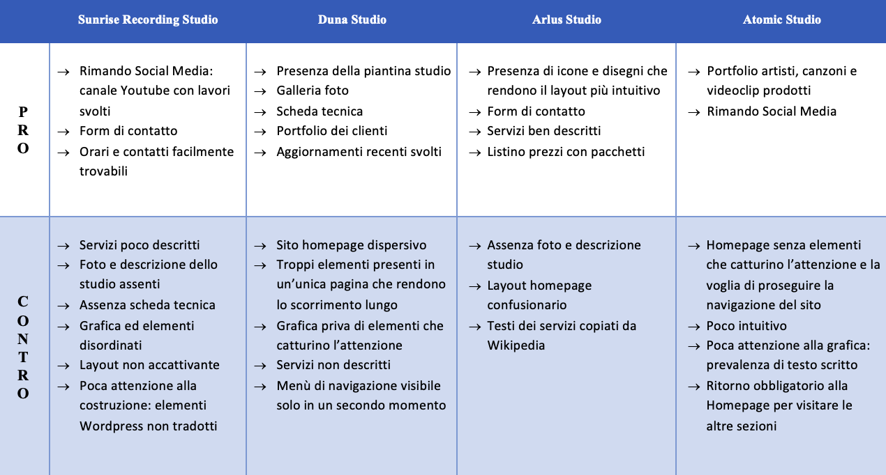
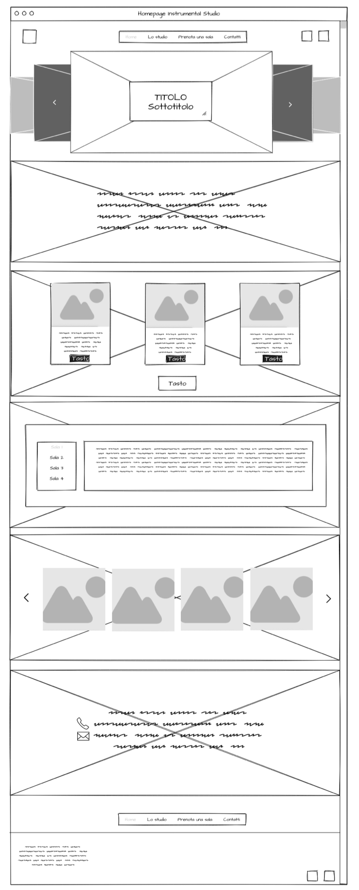
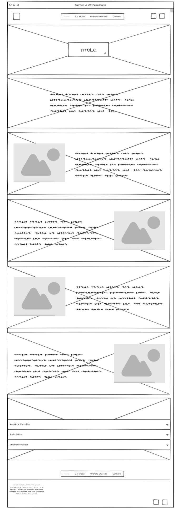
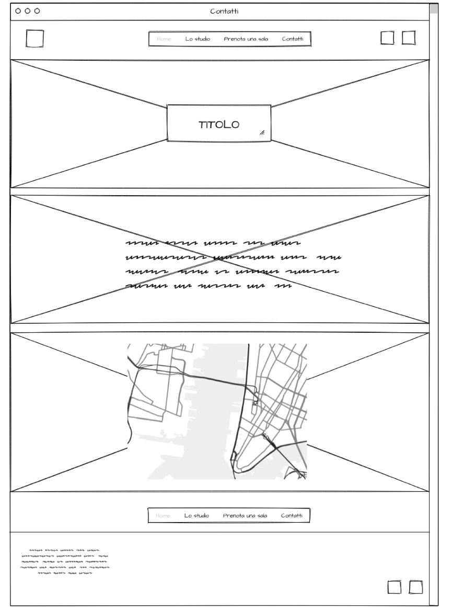
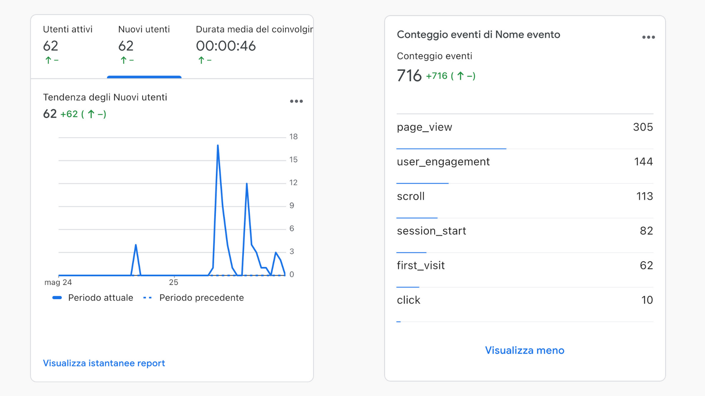

Abstract
Instrumental Studio è un sito responsive, usabile e facile da navigare. L'obbiettivo di questo sito è quello di mostrare uno studio dove ognuno sia libero di creare la propria musica in un ambiente amichevole, sia per artisti che vogliono essere aiutati da professionisti sia per artisti che vogliono semplicemente usufruire degli strumenti presenti in ogni sala di lavoro e lavorare in autonomia, punto saliente di questo studio. Ogni strumento e spazio di lavoro è ben descritto, non resta che portare la propria idea e con un po' di impegno farsi conoscere con un prodotto finale professionale e ben lavorato!
Project Managment Plan
Benchmarking
Obbiettivi
L'obbiettivo di questo sito è di fare da vetrina allo studio di registrazione Instrumental, in tutti i suoi aspetti lavorativi e tecnici. Le diverse sezioni hanno lo scopo di mostrare all'utente tutti i servizi, le sale e gli strumenti presenti, dando ad ogni artista la possibilità di esprimersi al meglio con l'aiuto di esperti. Oltre a questo, il sito dà la possibilità all'utente di prenotare qualsiasi sala per creare i propri lavori in autonomia, offrendo così un'opportunità a chiunque voglia fare musica ad un budget più ridotto.
Target
Il target primario di Insturmental Studio è un'artista che vuole creare propria musica e che sta cercando uno studio su cui appoggiarsi ad esperti che siano disposti a seguirlo nel proprio percorso musicale, successivamente anche tutti gli artisti che vogliono produrre musica a basso costo, avendo a disposizione sale e strumenti per creare musica in autonomia.
Competitors
Per quanto riguarda l'analisi dei competitors ho deciso di privilegiare quelli locali, trovando i seguenti punti di forza e di debolezza:
Figura 1 - Tabella pro e contro Competitors
Struttura e Layout
Architettura del sito
Figura 2 - Rappresentazione ad albero della struttura del sito
Wireframe
Figura 3 - Wireframe Homepage
Figura 4 - Wireframe pagina Servizi e Attrezzature
Figura 5 - Wireframe pagina Sale di lavoro
Figura 6 - Wireframe pagina Prenota ora
Figura 7 - Wireframe pagina Contatti
Linguaggi e strumenti
Linguaggi
HTML
CSS
JAVASCRIPT
Strumenti
Recond è il template dal quale Instrumental Studio ha preso spunto
Canva è il tool di grafica utilizzato per il sito e la creazione del logo
Mockflow è il programma utilizzato per la realizzazione del Wireframe
W3Schools, HTML, MRW e Bootstrap sono i siti che hanno supportato la progettazione
Font Awesome è il toolkit utilizzato per le icone del sito
Github è il servizio di hosting che ha permesso a Instrumental Studio di essere on-line
Pexels è il sito utilizzato per la raccolta immagini
Google Fonts è il sito utilizzato per i font
Formspree è il sito utilizzato per l'invio del form di prenotazione
Look and Feel
Instrumental Studio è uno studio di registrazione sul mare a Cervia, per questo ho scelto come colore del logo e poi come colore principale del sito il blu (#5271ff), accostando insieme ad esso un sottotono dell'arancione, contrastante con il blu (#fff8f2). Per quanto riguarda sfondo e scritte ho deciso di rimanere sui colori bianco e nero per dare un tocco di semplicità e una lettura più agevolata da parte dell'utente.
I font utilizzati sono Montserrat per i titoli, Great Vibes per i sottotitoli e Kenit per tutti gli altri testi. Montserrat e Kenit sono entrambi sans serif, il primo con un carattere più incisivo è adatto per far risaltare tutti i titoli e quindi anche risaltare le tematiche principali del sito; il secondo invece è più fine, così da essere più semplice e leggibile e, quindi, garantire una lettura veloce e poco stancante. Infine, Great Vibes è un font corsivo e decorativo che da un tocco di movimento all'interno del sito.
All'interno del sito sono stati aggiunti elementi che portano a semplificare le scelte dell'utente come ad esempio la mappa di Google Maps per raggiungere lo studio, il form di prenotazione per prenotare le sale in modo autonomo, pulsanti per raggiungere le varie sezioni e far muovere l'utente il più facilmente possibile e agevolarlo all'azione. Ogni elemento "link" presenta una transizione (solitamente cromatica) al passaggio del mouse per portare l'utente all'azione. Il menù di navigazione, infine, presenta già tutte le sezioni del sito utili così da navigare il sito in modo intuitivo.
Communication Strategy
Background
Instrumental Studio, a differenza dei siti dei competitors, sceglie di creare un sito totalmente basato sulla descrizione di ciò che i clienti possono trovare, sia a livello tecnico che estetico. Infatti, nella maggioranza dei competitors c'è una grossa mancanza su quali siano i servizi, gli spazi e gli strumenti che lo studio ha a disposizione. Inoltre, questi siti presentano una grafica disordinata e disorientante per l'utente che non sa come muoversi per cercare gli aspetti da vedere o non capisce totalmente alcune funzionalità dello studio stesso. Il progetto di questo sito s’inserisce nel panorama dei suoi competitors dotato di una separazione dei vari aspetti dello studio coincisa e chiara, una descrizione di tutte le componenti dello studio e dalla particolarità di dare spazio anche agli artisti che vogliono creare musica in autonomia ma con strumenti professionali.
Obbiettivi comunicativi
Il progetto, attraverso l'utilizzo del sito web, si prefigge di dare al visitatore un quadro generale dello studio e delle sue attività, di illustrare la sua storia e incuriosirlo così da creare le basi per la sua fidelizzazione. Questo anche per creare interesse e fare pubblicità allo studio, trovando un modo per distinguersi dai competitors e portare i clienti a scegliere lo studio in questione.
Target Audience e Messaggio
Il sito si rivolge principalmente agli artisti (cantanti o musicisti) locali, sia emergenti che già posizionati, nel raggio massimo di 30km, di qualsiasi età e che hanno espresso la loro passione per la musica o a temi simili e interessati a creare musica nuova e crescere artisticamente.
Questi gruppi di interesse possono essere raggiunti attraverso la promozione sui social media e l'advertising online soprattutto con annunci sui motori di ricerca così da indicizzare il proprio sito e portarlo avanti nelle ricerche. Tutto questo accompagnato da una targetizzazione ben precisa per parole chiave o usando i database raccolti tramite il form di prenotazione sul sito. È possibile raggiungere clientela anche con volantinaggio, passaparola o semplicemente lasciando opuscoli in luoghi frequentati da musicisti come negozi di strumenti, teatri, concerti, etc.
Gli aspetti interni al sito web che possono aiutare a raggiungere i propri obiettivi sono la grafica moderna, intuitiva e soprattutto la specificità delle descrizioni degli aspetti dello studio, che permette meglio di conoscere gli spazi in cui si andrà a lavorare al proprio prodotto musicale.
Il messaggio che si vuole trasmettere è quello di essere uno studio amichevole, pronto per mettersi in gioco per i suoi clienti e portarli il più alto possibile, standogli accanto nel processo produttivo e mettendo a disposizione ogni strumento per creare al meglio musica. Tutto ciò portando anche la novità di dare al proprio cliente uno spazio a sua disposizione in cui lavorare in autonomia ad un prezzo orario accessibile a chiunque. Una volta compreso questo messaggio non resta che portare la propria idea, contattando lo studio, andando direttamente in loco o se si vuole produrre in autonomia compilare il form di prenotazione per avere una sala tutta per sè.
Promozione
IIl modo migliore per promuovere Instrumental Studio sono i social media che offrono una targetizzazione ben mirata e una geolocalizzazione del target primario e, soprattutto, possono far arrivare meglio il messaggio di vicinanza e familiarità che lo studio vuole condividere. Oltre a questo campagne sui motori di ricerca aiuteranno a prevalere sui vari competitors locali e attirare la curiosità dell'utente.Per i clienti fidelizzati, invece, può essere utile creare newsletter con novità e promozioni. Infine per il lato offline, lasciare qualche materiale pubblicitario in luoghi frequentati dal target primario può essere utile per attirare qualche cliente, nonché creare un cartellone pubblicitario che possa catturare l'attenzione anche di quei musicisti non presenti nelle piattaforme online.
Valutazione dei risultati
Gli obiettivi sono stati raggiunti e il messaggio colto in quanto, controllando i report di Google Analytics, user engagement e visualizzazione delle pagine sono alte, quindi un coinvolgimento rilevante, anche a livello di compilazione del form.
